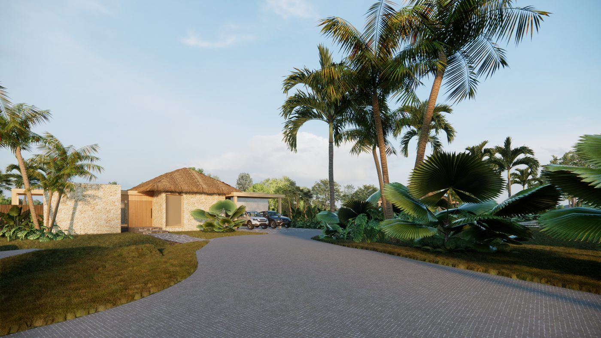
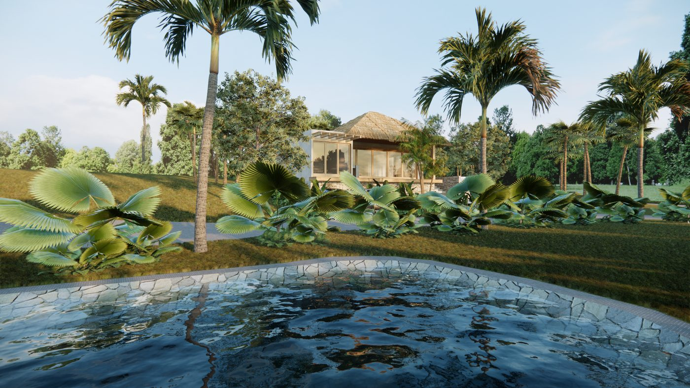

Escritas desde el pueblo
Guías de Ayampe
Todo lo que necesitas para planear tu viaje a la costa de Ecuador: surf, ballenas, playas vírgenes y los secretos del pueblo más tranquilo de la Ruta del Spondylus.

Ecuador vs Costa Rica: ¿dónde ir a la playa?
Precios, surf, naturaleza y seguridad: la comparación honesta del Pacífico.
Leer la guía
Montañita vs Ayampe: ¿cuál elegir?
Fiesta o calma: qué pueblo de playa encaja contigo.
Leer la guía
Guía de Puerto López
Ballenas, Isla de la Plata y por qué dormir en la tranquila Ayampe.
Leer la guía
Cómo llegar a Ayampe desde Guayaquil
Bus, auto y traslados privados por la Ruta del Spondylus.
Leer la guía
Mejor época para visitar la costa
Sol, ballenas y surf: cuándo venir según el clima.
Leer la guía
Comprar propiedad siendo extranjero
País dolarizado, residencia por inversión y cómo es el proceso.
Leer la guía
Qué hacer en Ayampe: la guía completa
Dónde queda, qué hacer, cuándo ir y dónde alojarse en el pueblo más tranquilo de la Ruta del Spondylus.
Leer la guía
Surf en Ayampe: olas, temporada y escuelas
Beach break constante todo el año, sin multitudes. Temporadas, spots cercanos y consejos locales.
Leer la guía
Avistamiento de ballenas: temporada y tours
De junio a septiembre las jorobadas llegan a Manabí. Tours desde Puerto López y la Isla de la Plata.
Leer la guía
Los Frailes: la playa más hermosa de Manabí
Cómo llegar desde Ayampe, el sendero al mirador y qué llevar a la playa virgen del Parque Machalilla.
Leer la guía
5 razones para invertir frente al mar en Ayampe
Escasez real, renta vacacional creciente y una comunidad que protege el valor del destino.
Leer la guía